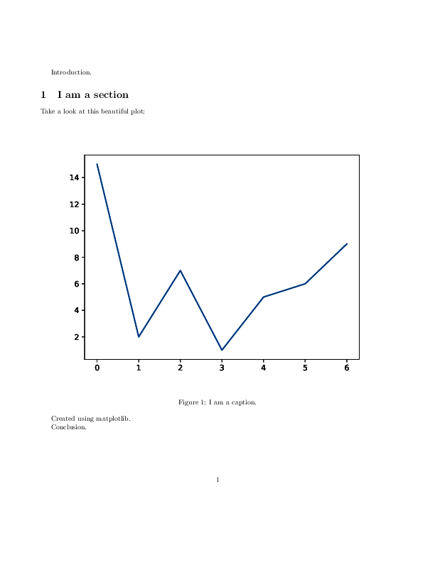
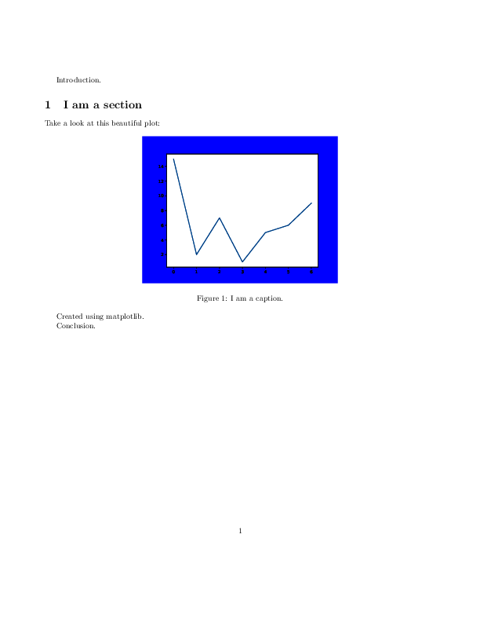

Matplotlib example¶
This example shows matplotlib functionality.
The code¶
import matplotlib
from pylatex import Document, Package, Section, Figure, NoEscape
matplotlib.use('Agg') # Not to use X server. For TravisCI.
import matplotlib.pyplot as plt # noqa
def main(fname, width, *args, **kwargs):
doc = Document(fname)
doc.packages.append(Package('geometry', options=['left=2cm', 'right=2cm']))
doc.append('Introduction.')
with doc.create(Section('I am a section')):
doc.append('Take a look at this beautiful plot:')
with doc.create(Figure(position='htbp')) as plot:
plot.add_plot(width=NoEscape(width), *args, **kwargs)
plot.add_caption('I am a caption.')
doc.append('Created using matplotlib.')
doc.append('Conclusion.')
doc.generate_pdf(clean_tex=False)
if __name__ == '__main__':
x = [0, 1, 2, 3, 4, 5, 6]
y = [15, 2, 7, 1, 5, 6, 9]
plt.plot(x, y)
main('matplotlib_ex-dpi', r'1\textwidth', dpi=300)
main('matplotlib_ex-facecolor', r'0.5\textwidth', facecolor='b')
The generated files¶
matplotlib_ex-dpi.tex¶
1 2 3 4 5 6 7 8 9 10 11 12 13 14 15 16 17 18 19 20 21 22 23 24 25 26 27 | \documentclass{article}%
\usepackage[T1]{fontenc}%
\usepackage[utf8]{inputenc}%
\usepackage{lmodern}%
\usepackage{textcomp}%
\usepackage[left=2cm,right=2cm]{geometry}%
\usepackage{graphicx}%
%
%
\begin{document}%
Introduction.%
\section*{I am a section}%
Take a look at this beautiful plot:%
\begin{figure}[htbp]%
\centering%
\includegraphics[width=1\textwidth]{/tmp/pylatex/cdd0d777-15aa-4c59-a8e2-a698145bd4f4.pdf}%
\caption{I am a caption.}%
\end{figure}
%
Created using matplotlib.
%
Conclusion.%
\end{document}
|
matplotlib_ex-dpi.pdf

matplotlib_ex-facecolor.tex¶
1 2 3 4 5 6 7 8 9 10 11 12 13 14 15 16 17 18 19 20 21 22 23 24 25 26 27 | \documentclass{article}%
\usepackage[T1]{fontenc}%
\usepackage[utf8]{inputenc}%
\usepackage{lmodern}%
\usepackage{textcomp}%
\usepackage[left=2cm,right=2cm]{geometry}%
\usepackage{graphicx}%
%
%
\begin{document}%
Introduction.%
\section*{I am a section}%
Take a look at this beautiful plot:%
\begin{figure}[htbp]%
\centering%
\includegraphics[width=0.5\textwidth]{/tmp/pylatex/60aeee86-7a99-4c0a-b758-db8d6baaa3df.pdf}%
\caption{I am a caption.}%
\end{figure}
%
Created using matplotlib.
%
Conclusion.%
\end{document}
|
matplotlib_ex-facecolor.pdf
